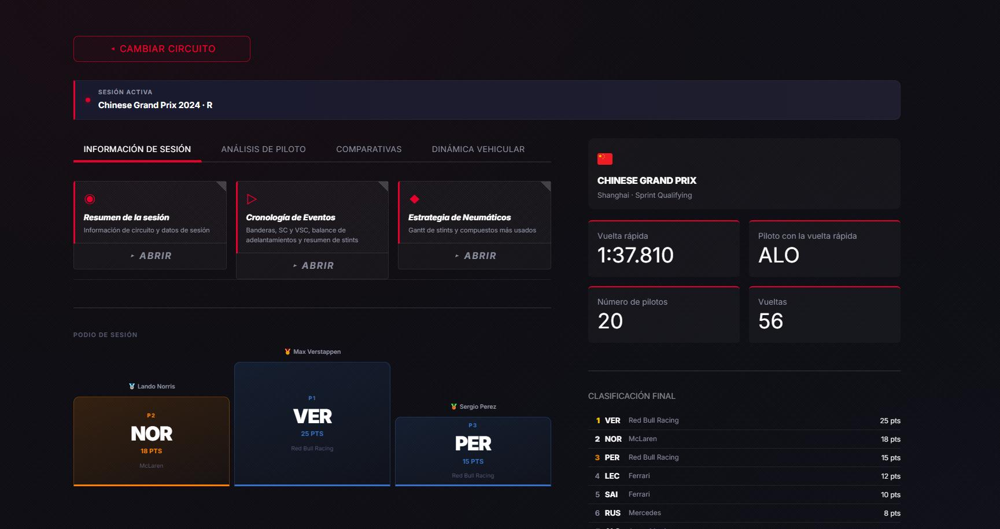
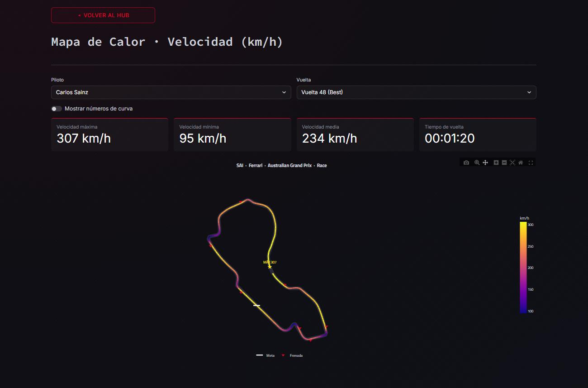
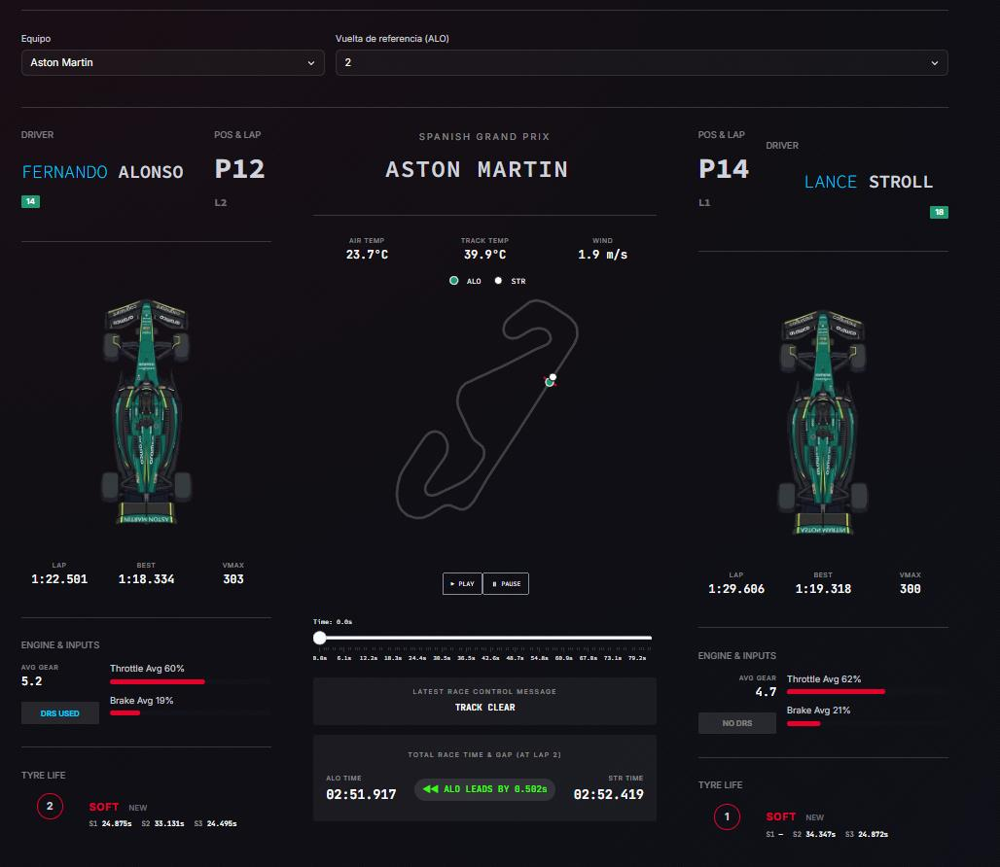

Telemetría F1
TFG · 2026 · Python, Streamlit, FastF1, scikit-learn
Mónaco
Urbano extremo
1,20 g lateral · 12,0 cambios de marcha por km · 3,28 km
Una aplicación web que convierte la telemetría real de la Fórmula 1 en paneles que entiende alguien que no es ingeniero de pista.
Qué hice. Trazas de velocidad y marchas, comparativas entre pilotos, vuelta óptima, coche fantasma, diagrama G-G y carga de neumáticos, con suavizado y filtrado de la señal antes de pintar nada.
Qué salió. Un K-Means agrupa 25 circuitos en 5 familias y 25 pilotos en 4 estilos de conducción. Validado con leave-one-out: 96 % de acierto en circuitos. Tests con pytest.
Cómo lo llevé. Solo, de principio a fin: requisitos, iteraciones cortas, Git y memoria técnica.
Ver el repositorio en GitHub

